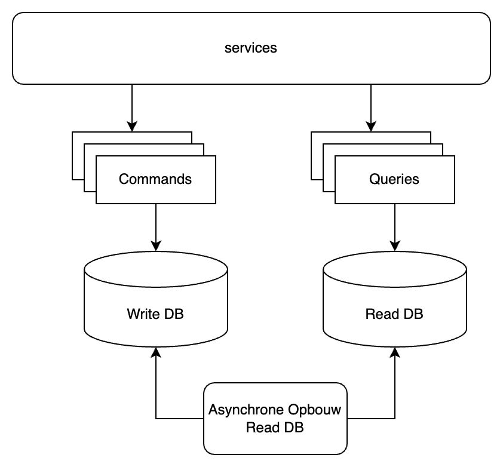

Kleine Topics
SOLID
SOLID is een acroniem dat vijf principes beschrijft die een basis vormen voor object-georiënteerd softwareontwerp.
- S
-
Single Responsibility: Een klasse heeft één duidelijke verantwoordelijkheid en plaats in het ontwerp.
- O
-
Open/Closed: Klassen en methodes moeten open zijn voor uitbreiding, maar gesloten voor wijzigingen. Je moet gedrag van een klasse kunnen uitbreiden zonder de bestaande code te veranderen.
- L
-
Liskov Substitution: Objecten van een overkoepelende klasse moeten kunnen worden vervangen door objecten van afgeleide types zonder dat de correctheid van het programma in gevaar komt. ChatGPT heeft dit vaak fout
- I
-
Interface Segregation: Afhankelijke code mag niet gedwongen worden om interfaces te implementeren die ze niet gebruikt. Maak meerdere specifieke interfaces ipv een algemene.
- D
-
Dependency Injection: Koppel dependencies los door ze te injecteren. Programmeer tegen interfaces.
DRY
- Don’t Repeat Yourself
-
Herhaal code of logica niet onnodig. Functionaliteit slechts op één plaats in de code implementeren bevordert hergebruik en onderhoudbaarheid. Er is minder kans op fouten en de codebase is overzichtelijker.
YAGNI
- You Aren’t Gonna Need It
-
Voeg geen functionaliteit toe voordat deze echt nodig is. Voorkom onnodige complexiteit en verspilling van tijd en middelen door alleen te bouwen wat op dat moment vereist is.
| "wat echt nodig is" staat open voor interpretatie en zal anders ingevuld al naargelang mindset en context. In de les Ontwerp durven we wel eens overengineered oplossingen te bouwen voor eenvoudige problemen. Dit doen we omdat de boodschap anders verloren zou gaan in de complexiteit van het probleem. |
CQRS
- Command Query Responsibility Segregation
-
De lees- en schrijfoperaties van een datamodel worden gescheiden in verschillende interfaces.
Dit betekent dat een commando (dat een verandering van de toestand van het systeem veroorzaakt) en een query (dat de huidige toestand van het systeem opvraagt) niet dezelfde gegevensbronnen of methoden hoeven te delen.
Door deze scheiding kunnen de lees- en schrijfsystemen onafhankelijk van elkaar worden geoptimaliseerd, en zelfs op aparte servers staan, wat leidt tot betere prestaties en schaalbaarheid.

CQRS wordt vaak gebruikt in combinatie met Event Sourcing, waar alle veranderingen als events worden opgeslagen, en de huidige toestand van het systeem wordt opgebouwd door deze events te ordenen, filteren en interpreteren. Dit biedt voordelen zoals nauwkeurige audit logs, eenvoudige rollback-mogelijkheden, en flexibiliteit in het bouwen van verschillende leesmodellen voor uiteenlopende doeleinden.
Al met al helpt CQRS om complexe domeinen te beheren door het aanpakken van de verschillende vereisten voor lees- en schrijfoperaties op een efficiënte manier.
DDD
- Domain-Driven Design
-
Aanpak voor het ontwerpen en ontwikkelen van complexe software door nauw samen te werken met domeindeskundigen om een gemeenschappelijk begrip van het probleemgebied te bereiken.
Het doel van DDD is om de software te structureren rond de kernonderdelen van het bedrijfsdomein. De taal en concepten van dat domein worden gebruikt om modellen te creëren die nauw aansluiten bij de werkelijke bedrijfsprocessen.
DDD bevordert het gebruik van een gemeenschappelijke taal, de Ubiquitous Language, door ontwikkelaars én domeindeskundigen wordt begrepen. Dit verbetert de communicatie en verkleint het risico op misverstanden.
Het domein wordt opgedeeld in bounded contexts, gebieden waarin specifieke modellen en terminologie van kracht zijn. Elke bounded context kan apart worden ontworpen en ontwikkeld.
Men organiseert de code binnen een bounded context veelal in entiteiten, services en repositories.